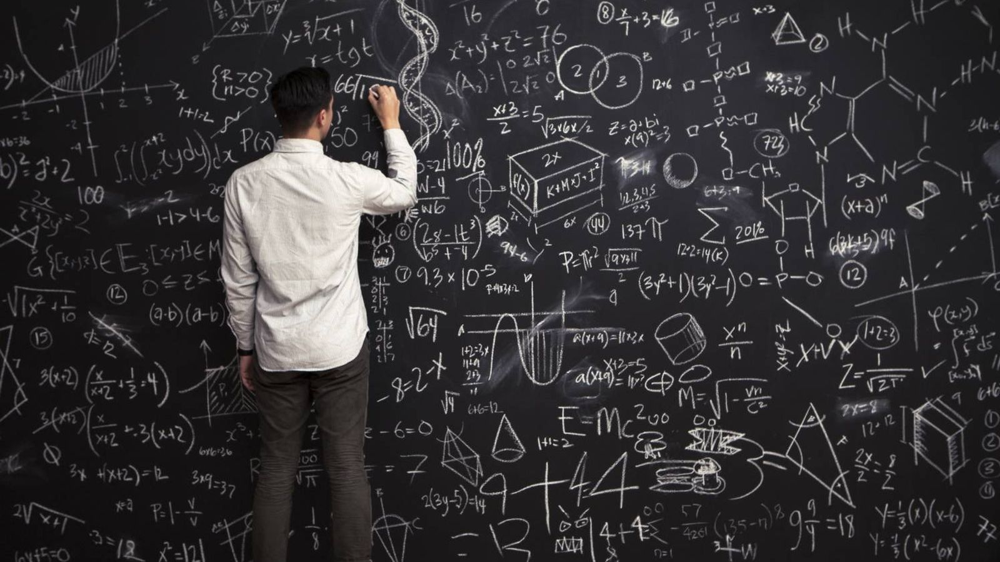
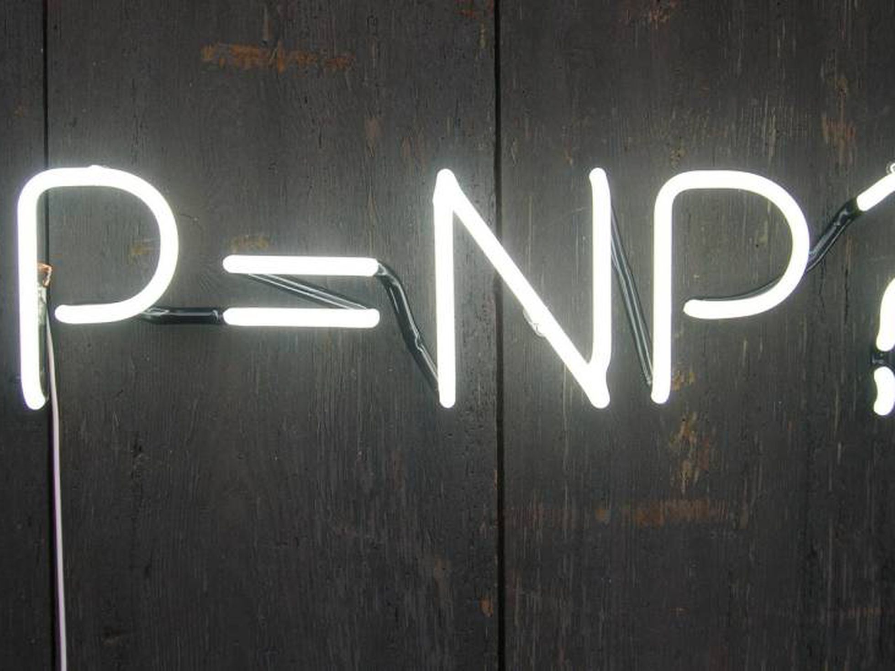
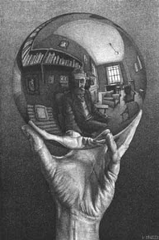
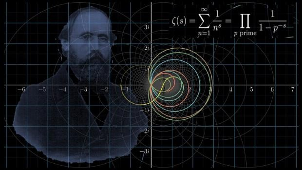
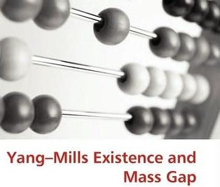
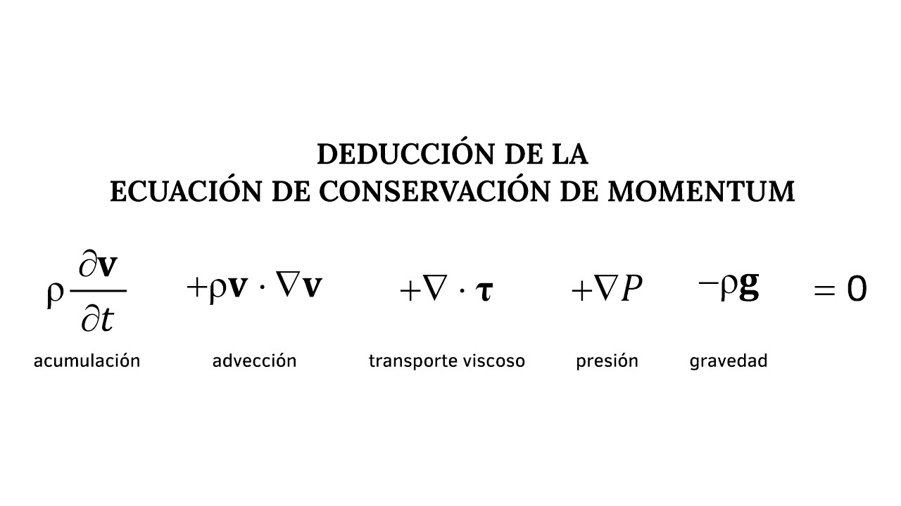
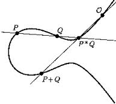

¿Cuál es la recompensa por resolver los problemas?

US$1 millón por resolver un problema matemático.
La cuantía de la recompensa permite imaginar la complejidad de los llamados Problemas del Milenio, una lista con
los siete desafíos más importantes sin resolver publicada en el año 2000 por el Instituto Clay de Matemáticas de Cambridge,
Estados Unidos.
El premio es suculento pero la tarea no es fácil. Hasta ahora, solo uno ha sido resuelto de manera oficial.
Pero antes de poder recibir el premio, su teoría debe ser publicada por una revista científica de prestigio mundial.
Dos años después, si la teoría es aceptada por la comunidad matemática, tendrá que recibir el visto bueno de dos
comités independientes de expertos del Instituto Clay.
Problemas Matemáticos
El problema de P frente a NP

Los problemas P (polinómicos) son los que se pueden resolver en un tiempo razonable.
Los problemas NP (no deterministas en tiempo polinómico) son aquellos que, aunque sea
difícil encontrarles solución, una vez hallada se puede comprobar en un tiempo razonable que es correcta.
Si se puede encontrar fácilmente una solución, esta también se podrá verificar de manera sencilla, por
lo que todo problema P es también NP.
Lo que se desconoce es si hay algún problema NP que no sea P. Los expertos confían en que así sea,
pero de momento nadie ha sido capaz de demostrarlo.
A continuacion se puede visualizar el siguiente video que habla sobre esta conjetura:
La conjetura de Hodge
La conjetura de Hodge está relacionada con la geometría algebraica,
que estudia los lugares geométricos que se pueden definir por polinomios como circunferencias o parábolas.
Con el paso del tiempo, sin embargo, algunas propiedades de estos conjuntos comenzaron a ser aplicadas a
cosas que no tienen una interpretación geométrica. Una de ellas es lo que se conoce como un "ciclo de Hodge".
Este problema relaciona la topología algebraica de una variedad algebraica compleja no singular con sus subvariedades.
En concreto, la conjetura dice que todo ciclo de Hodge es combinación racional de ciclos algebraicos, es decir,
de los ciclos asociados a subvariedades analíticas cerradas.
En el siguiente video se puede visualizar una pequeña Introducción a la Conjetura de Hodge:
La conjetura de Poincaré

Este problema es el único que hasta el momento fue solucionado oficialmente.
El logro fue del matemático ruso Grigori Perelman en 2006, quien sorprendió al rechazar el premio tras asegurar
que no era ningún héroe ni quería ser expuesto de manera masiva.
La conjetura de Poincaré era considerada una de las hipótesis matemáticas más importantes y difíciles de demostrar.
En topología, la superficie de una esfera bidimensional se caracteriza por ser la única superficie simplemente
conexa, compacta y cerrada (sin límites).
La conjetura, que se transformó en teorema después de que la resolución de Perelmán fuera aceptada, establece
que esta afirmación es también válida para esferas tridimensionales.
En esta ocasion se puede ver una reseña del unico problema del milenio que ha sido demostrado:
La hipótesis de Riemann

La hipótesis de Riemann se centra en la distribución de los números primos,
aquellos indivisibles por cualquier otro número que no sea 1 ni ellos mismos.
El matemático alemán Bernd Riemann sugirió que la distribución de estos números
está estrechamente relacionada con el comportamiento de la llamada "función zeta de Riemann".
Esta función tiene dos tipos de ceros: los ceros "triviales", que son todos los números
enteros pares y negativos; y los ceros "no triviales", cuya parte real está siempre entre 0 y 1.
La hipótesis dice que todos los ceros no triviales tienen una parte real de 1/2.
Esto ha sido verificado para las primeras 10.000.000.000.000 soluciones.
A continuacion se puede visualizar un poco Sobre la Hipotesis de Riemann:
Yang-Mills y el salto de masa ("mass gap")

Distintos experimentos descubrieron la existencia de un mass gap (traducido en español como "salto de masa"
o "intervalo másico") en la solución a la teoría de Yang-Mills, la cual estableció las bases de la teoría
de las partículas elementales de la materia y en cuya versión cuántica describen partículas sin masa (gluones).
El uso exitoso de esta teoría para describir las fuertes interacciones de las partículas elementales depende
de ese "salto de masa", una propiedad mecánica cuántica según la cual las partículas cuánticas tienen masas
positivas, aunque las ondas clásicas viajan a la velocidad de la luz.
Aunque esta propiedad fue confirmada por simulaciones por computadora, aún no se logró entender desde un punto de vista teórico.
El problema consiste en determinar de manera rigurosa la existencia de una teoría de Yang-Mills cuántica que pueda explicar este
fenómeno. Es decir, si "como muchos expertos creen" todas las partículas de esta teoría (los gluones) tienen masa o no.
En el siguiente video se puede visualizar un poco de la historia sobre el problema de Yang-Mills:
Las ecuaciones de Navier-Stokes

Estas ecuaciones describen el movimiento de fluidos como líquidos y gases que gobiernan la atmósfera terrestre,
las corrientes del océano o el flujo alrededor de vehículos o proyectiles.
Pese a que desde su formulación en el siglo XIX describen adecuadamente tanto el flujo turbulento
(el que se da de manera caótica) como laminar (no turbulento), sigue sin existir una explicación
rigurosa de cómo un fluido pasa de tener un flujo regular a uno turbulento.
Los científicos tratan de conseguir una mejorada teoría matemática sobre la dinámica de fluidos que ayude a
entender el fenómeno de la turbulencia y desbloquear los muchos secretos ocultos que aún permanecen en las
ecuaciones de Navier-Stokes.
Matemáticos y físicos creen que esto nos ayudaría a mejorar nuestro conocimiento sobre la formación de olas
en el mar o turbulencias en el aire y, lo que es aún más importante, poder predecirlas mejor.
A continuación se puede visualizar una platica sobre las ecuaciones de Navier-Stokes:
Conjetura de Birch y Swinnerton-Dyer

La conjetura de Birch y Swinnerton-Dyer, que une geometría algebraica y teoría de números,
pide estudiar las soluciones racionales a ecuaciones que definen una curva elíptica
Las curvas algebraicas se clasifican según su género, siendo las más sencillas las de
género cero o curvas racionales (que tienen ninguna o infinitas soluciones racionales).
El problema, sin embargo, está en demostrar un criterio que distinga qué curvas de género 1
(también llamadas elípticas) tienen un número finito o infinito de soluciones racionales.
A continuación una explicación sobre la Conjetura de Birch y Swinnerton-Dyer: